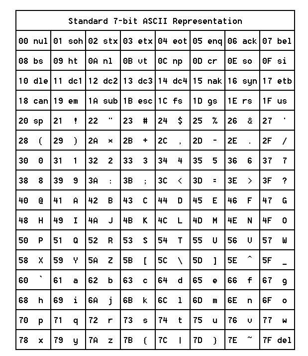

ASCII (czyt. aski, skrót od ang. American Standard Code for Information Interchange) – siedmiobitowy system kodowania znaków,
używany we współczesnych komputerach oraz sieciach komputerowych,
a także innych urządzeniach wyposażonych w mikroprocesor.
